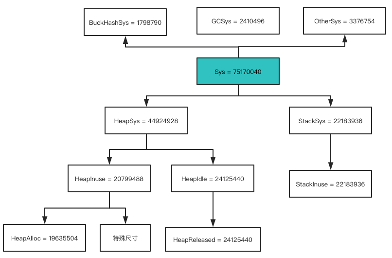

Go 程序员面试
参考说明
- Go 程序员面试
- 基于Go 1.16.10
第1章 逃逸分析
- 堆上对象都会通过调用runtime.newobject分配，该函数会调用runtime.mallocgc
- Go语言没有哪个关键字可以指定变量一定在堆上
- 查看Go支持的操作系统和CPU架构
- Linux内存管理：释放大块内存时的阻塞问题
- C标准库malloc，小于128KB用brk，大于128KB用mmap
- 测试发现munmap一块20GB的内存，会阻塞其他线程的malloc（brk/sbrk/mmap）1秒左右。
- 页框回收算法（PFRA）：大部分内核占用的内存不可回收，大部分用户的可以回收，被mlock标记的不可回收
- 测试释放大块内存的阻塞：munmap、madvise + munmap、mlock + madvise + munmap
- golang内存泄漏排查
- runtime.Memstats的解读见下图
- Go 应用内存占用太多，让排查？
- 分析了runtime.schedinit->runtime.mallocinit
- top 命令的虚拟内存（VIRT）、物理内存（RES）、共享内存（SHR）
- 匿名内存：就是没有文件背景的内存，就是无法和磁盘进行交换的，比如堆栈。
- 共享内存（SHR）包括：
- 程序的代码段。
- 动态库的代码段。
- 通过 mmap 做的文件映射。
- 通过 mmap 做的匿名映射，但指明了MAP_SHARED属性。
- 通过 shmget 申请的共享内存。
- A deep dive into the OS memory use of a simple Go program
- pmap -p 进程ID后，前四个内存段分别是：text、rodata(常量)、data(全局变量)、bss(未初始化)
- cat /proc/进程ID/maps，vvar是内核和进程共享的数据，vdso是系统调用代码实现
- Linux top 命令里的内存相关字段
- 相关英文文章前三章节，Memory - Part 1: Memory Types
- VIRT：所有虚拟内存之和
- RES：所有物理内存之和，不包含交换区的
- SHR：所有物理内存中，共享内存部分
- CODE：所有物理内存中，可执行代码部分
- DATA：所有虚拟内存中，去除共享区域部分剩下的
- ANON = RES - SHR

第2章 延迟语句
- defer的执行过程
- 返回值=xxx
- 调用defer函数
- 空的return
- 探究 Go 源码中 panic & recover 有哪些坑
- 无法捕获的异常：
- 内存溢出：_ = make([]int64, 1<<40)
- map 并发读写
- 栈内存耗尽，栈最大是1G
- 开启一个nil协程：var f func() && go f
- 所有协程都休眠了
- 可以捕获的异常：
- 数组访问越界
- 访问地址无效
- 写nil的map
- 写已经关闭的channel
- 类型断言错误
第3章 数据容器
- make和new的区别
- make只能初始化map、slice、chan；new都能
- make返回值，new返回值的指针
- PS：用new初始化map、slice、chan后值是nil，所以禁止用来初始化map和chan
- make系列函数：必定在堆上分配
- makechan：最终调用mallocgc，当make(chan int)时必定在堆上分配
- makeslice：最终调用mallocgc
- makemap：因为makemap函数返回值是*hmap，所以new(hmap)会执行newobject
- map只有扩容，没有缩容。如果桶过于稀疏，则迁移到新桶重新排列(内存不变)
- map在赋值的时候检查是否需要扩容，调用growWork来扩容。
- 在赋值和删除时进行渐进式搬迁
- 每次搬迁2个根bucket
第4章 通道
- 如何优雅的关闭通道：
- 1个sender，1个receiver：sender端关闭
- 1个sender，N个receiver：sender端关闭
- N个sender，1个receiver：receiver端通过closeChan通知sender们退出，不关闭通道(GC来回收)
- N个sender，N个receiver：receiver端通过closeChan通知sender们退出，不关闭通道(GC来回收)
- 读写一个nil通道将永久挂起，即使这个通道后续初始化了，设计缘由见链接